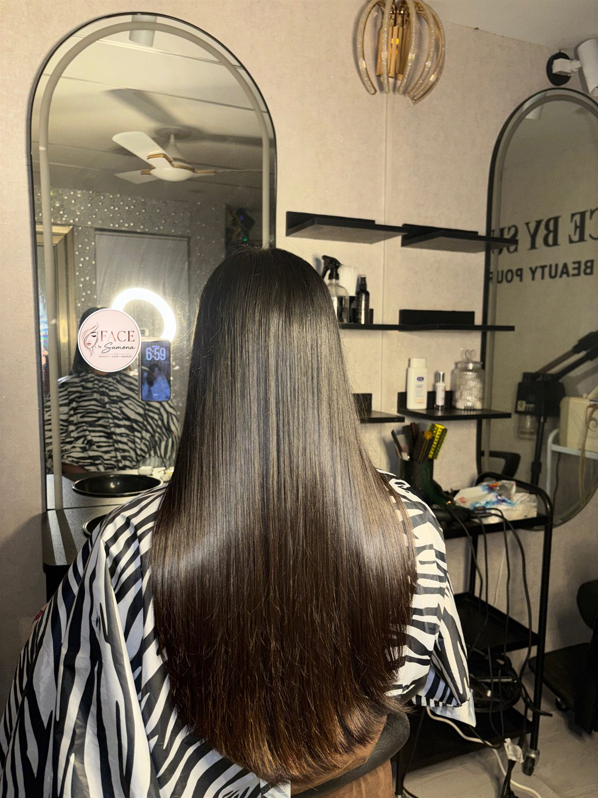
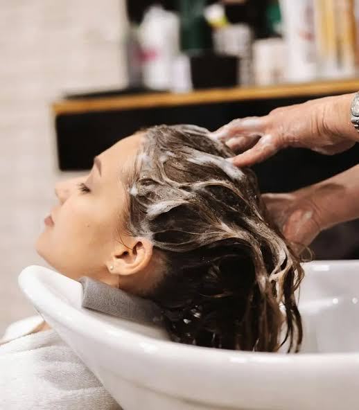
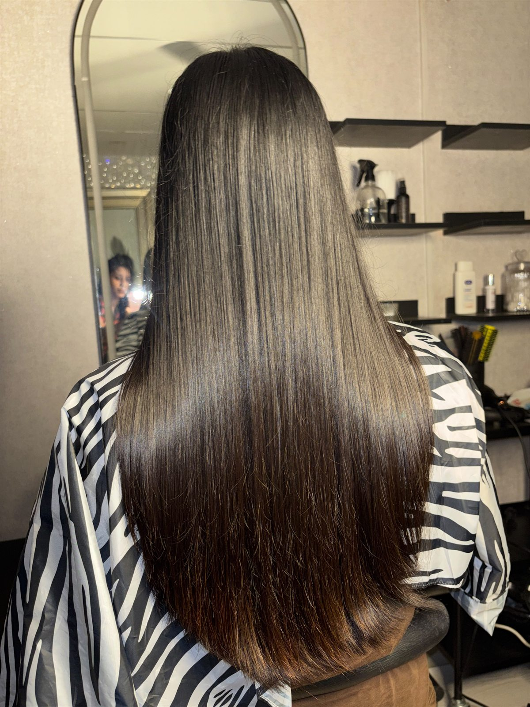
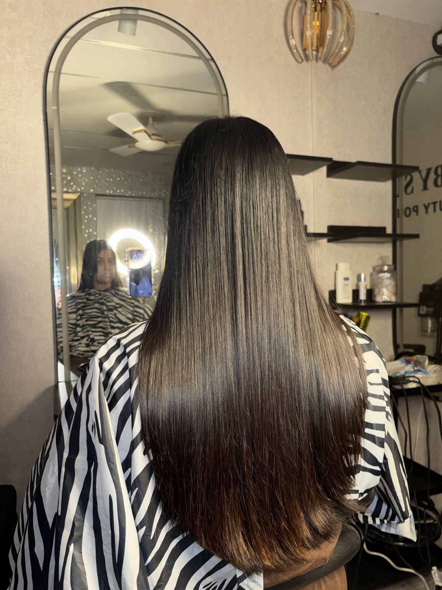
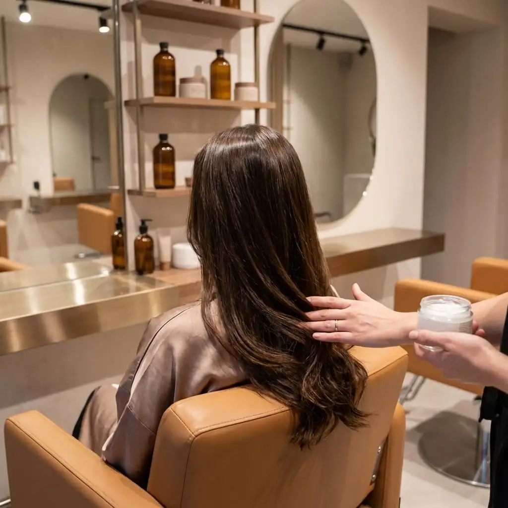
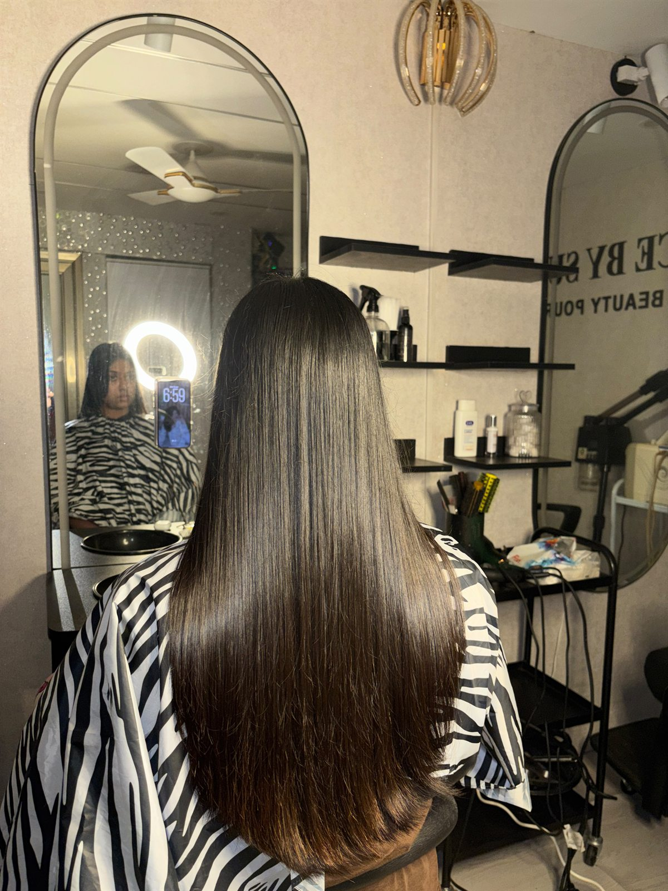

Give your hair the care it deserves at Face by Sumona, a trusted beauty salon near Tongi, Bangladesh. Our professional hair treatments are designed for women who want softer, smoother, healthier-looking, and more manageable hair.
Whether your hair is dry, damaged, frizzy, dull, weak, or affected by regular heat styling and environmental pollution, our certified beautician, Sumona, will recommend a treatment tailored specifically to your hair type and scalp condition.
At Face by Sumona, we believe beautiful hair starts from a healthy scalp and proper nourishment. Every hair treatment begins with a careful evaluation of your hair texture, porosity, moisture levels, and styling history.
With over two decades of certified salon expertise serving women in Tongi, Gazipur, and Uttara since 2004, Sumona brings dedicated artistry and attention to each client session in a clean, welcoming, and women-only salon setting.
Explore our specialized treatments created to restore hydration, reverse environmental damage, enhance natural tone, and leave your hair smooth, silky, and lustrous.

A relaxing hair spa helps cleanse the scalp, eliminate stubborn dandruff and dust buildup, nourish hair roots, and improve overall softness and shine. With warm steam therapy and gentle scalp massage, it is the ideal choice for dry, dull, stressed, or tired-looking hair.

Our henna hair treatment provides traditional, botanical hair care while adding a beautiful natural-looking tone, rich gloss, and volume. Natural henna seals the hair cuticle, balances sebum production on the scalp, and makes your hair feel noticeably thicker, softer, and deeply conditioned.

Hair repair treatments are suitable for hair that feels rough, brittle, weak, or severely damaged from heat styling, chemical straighteners, bleaching, coloring, or harsh environmental exposure. The treatment infuses vital proteins to reinforce hair fibers, smooth split ends, and rebuild elasticity.

Deep conditioning penetrates beyond surface strands to restore essential moisture to parched, frizzy, and unruly hair. By locking moisture inside each strand, it tames stubborn flyaways, restores smooth glide, and leaves your hair feeling touchably soft, glossy, and effortless to comb and style.
Original, unedited salon photos showcasing smooth, shiny, and healthy hair transformations completed right here in our Tongi parlor.

Every woman's hair is unique, and daily routines like hair dryers, heat straighteners, hard water, dust, and humid weather can impact your hair health in different ways. Here is how to decide on the best treatment:
To prolong the silky feel, shine, and health of your hair after visiting our Tongi parlor, follow these simple post-treatment habits:
Healthy, radiant hair begins with the right care. Visit Face by Sumona near Tongi and enjoy a restful salon session with personal attention, expert advice, and visible results.
Book your appointment today and give your hair a fresh, beautiful look.
We provide four core hair treatments: relaxing Hair Spa for scalp detox and luster, natural Henna Conditioning for plant-based strength and gloss, Hair Repair Treatment for heat and chemically damaged strands, and Deep Conditioning Treatment for intense moisture and frizz control.
A hair spa treatment cleanses deep scalp buildup, unclogs follicles, improves blood circulation through massage, and infuses essential nutrients. It leaves dry, dull hair feeling deeply refreshed, smoother, and visibly shinier.
Our henna hair treatment provides natural, plant-based conditioning without harsh synthetic chemicals. It strengthens the hair shaft, adds an attractive natural tone and luster, balances scalp oil, and leaves hair soft and manageable.
Yes. Our hair repair treatment is formulated specifically for weak, brittle, heat-styled, or chemically processed hair. It helps replenish lost protein and hydration, seals split ends, and restores silkiness and bounce.
You can book easily by calling or messaging on WhatsApp at +880 1933-211642. We are located at 121 Hazi Bari, Sher E Bangla Road, Middle Arichpur, Tongi, Gazipur, open 7 days a week from 10:00 AM to 9:00 PM.